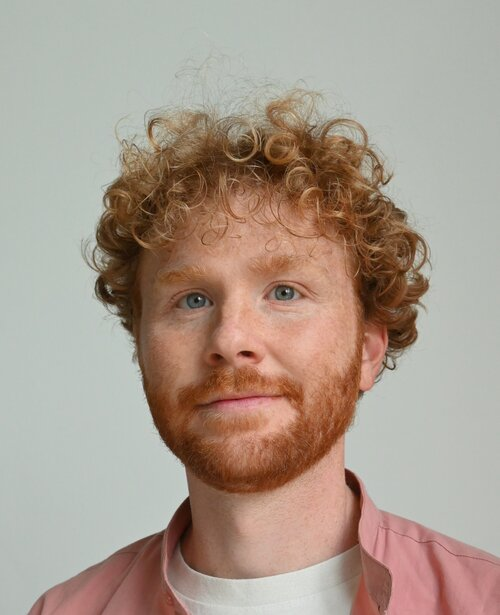

AI is changing work. People shape what it becomes.
I help organisations of 20 to 200 people in the Netherlands (companies, non-profits, schools) invest in the right AI use cases and make sure the tools are adopted, with attention to people's skills, workload and motivation.
Plan a first conversation →Some organisations haven't decided anything yet, while their people already use AI on their own. Others are experimenting, rolling out, or have rolled out and are still waiting for the results. The stage differs, but the problems come back to the same few.
In most organisations, AI is already in use through sector software or personal accounts on tools like ChatGPT, but without shared rules on what data goes in, which output to trust and who checks it. That creates quality risks and exposure under the EU AI Act and GDPR.
Efficiency was promised, but AI tools require supervision and generate additional tasks and complexity. Sometimes they end up in silent non-use.
Management is expected to lead the change in their teams, without having been equipped for it. Most managers are figuring out AI themselves while being asked to guide others.
When AI saves time, it often turns into more volume rather than better work. Roles change as tasks shift to AI, and people need clarity on what is now expected of them and which skills to keep developing.
Adoption stays below target and the return is hard to prove. Without a baseline, nobody can show whether the investment paid off, and it can end up negative.
The real cost of AI doesn't sit only in the licence, but especially in the time, attention and change it asks from people. A wrong use case wastes all of it.
Teams that use AI with shared rules and sound judgement. Your people learn how AI works and where it fails, practise on their own work, and agree when to trust, check or skip it. Two sessions a week apart, shaped by an intake with your team, closing with a debrief on where AI could pay back. Also supports the AI literacy the EU AI Act asks for.
A clear picture of where AI pays back, starting from the real work. Through interviews and workflow walkthroughs, I assess current AI use, process and data readiness, and the effect on people. You get prioritised use cases, the gaps to fix first, a baseline to measure return and clear next steps. 4 to 6 weeks, complete on its own.
AI that is actually used and pays off. Building on the diagnostic: a roadmap with usage rules, support for teams as adoption takes hold, coaching for managers leading the change, and measuring whether the work got better, not only logins. 3 to 6 months.
Not sure where to start? We can work it out together in a first conversation.
Most AI consulting starts from the tool and then manages the resistance. I start from the work: the tasks, the judgement they require, the workload, the skills and who decides. Only then do we choose the technology and design how it is introduced. Adoption mostly fails for people reasons (unclear rules, overload, fear, missing skills, being left out of the decision), and those only become visible when you look at the work first.
AI pays back only when three conditions hold, so I assess them together.
Which tasks matter for cost, quality or growth, what improving them is worth, and what it costs, including people's time.
Whether the workflow is stable and the data reliable enough for AI to work on. AI on a fragile process or poor data fails, whatever the tool.
Whether adoption builds people up or uses them up, across five dimensions:
A use case that is valuable and technically ready still fails if people don't adopt it, or if it erodes the skills it depends on.
The five dimensions come from my research on human sustainability, built on documented AI adoption cases across industries: what worked, what didn't, and why.

Simone Solazzo
Founder · Based in Eindhoven, working in English across the Netherlands
I studied management engineering at Politecnico di Milano and started in strategy consulting, working with banking and insurance clients. I then spent almost five years at sennder, a logistics technology company, growing from analyst to head of operational excellence. There I led operational transformations through rapid growth and constant technology change, working across operations, product, data, people and finance to redesign processes and bring new tools into daily work.
That work taught me that technology change succeeds or fails with the people doing the work. The same tool can make a team sharper or wear it down, depending on how it is introduced and where the gains go. After a year researching how organisations have navigated technological change, AI in particular, I founded human susy to help organisations get that right.
human susy is a young practice, started in 2026, so my client portfolio is still small. What I bring is experience from the inside of technology change: strategy, process and data engineering, product development and change management, working with people at every level, from operators to the executive team. Over the past year I have studied AI technology and how organisations adopt it, what works and what doesn't. Each organisation I work with now gets the commitment of a first client.
Planning AI for 2027? A good plan and a realistic budget start from where your organisation is today.
In a first 30-minute conversation, we look at your situation, where AI could make a difference and whether I'm the right fit. If there is a fit, I follow up with a short written proposal. No preparation needed, no obligation.
Email me to plan it.